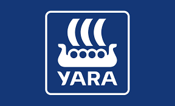
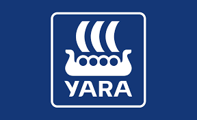

Soil2Milk‑prosjektet
Forbedrer bærekraft i hele verdikjeden fra jord → fôr → melk (2026–2030)
Vertsinstitusjon: NMBU
Prosjektleder: Mallikarjuna Rao Kovi
Finansiering: Norges forskningsråd (KSP) & FFL/JA‑midler
Totalbudsjett: 17,04 millioner NOK (2026–2030)
Soil2Milk forbedrer nitrogenutnyttelse (NUE) og reduserer klimagassutslipp ved å integrere gras–belgvekstsystemer (Lotus corniculatus), utvikle CRISPR‑mål for bedre NUE, utføre melkekuforsøk for metanintensitet og varierende avkastning, og oppdatere helhetlige gårdsmodeller (HolosNor) med maskinlæring og feltdata.


 



Finansiert av Norges forskningsråd (KSP‑programmet) og Forskningsmidlene for jordbruk og matindustri (FFL/JA).

Skjematisk oversikt over Soil → Fôr → Melk‑systemet og dataintegrasjon ved hjelp av maskinlæringsmodeller.
Kontakt: mallikarjuna.rao.kovi@nmbu.no
© 2025 NMBU • Soil2Milk‑prosjektet